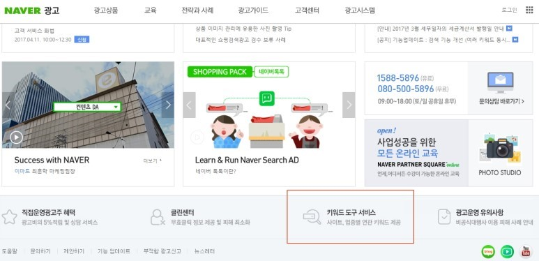
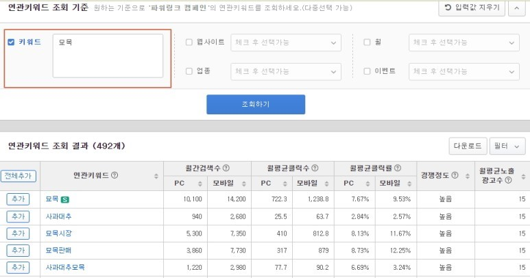
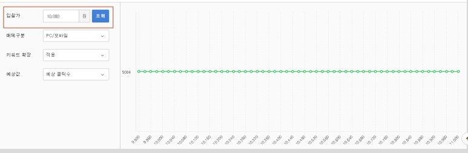
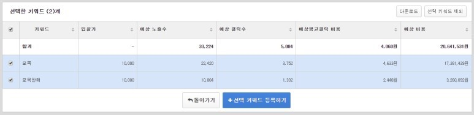

네이버 파워링크 광고 만들기
가장 먼저 네이버 광고 시스템에 가셔서 회원가입은 기본적으로 하셔야 합니다.
https://searchad.naver.com/
개인도 무료이니 가입을 꼭 합시다.
1) 네이버 광고 시스템 로그인 후 하단 키워드도구 서비스 클릭

2) 확인하고자 하는 대표 키워드를 입력합니다.
(아래에선 '묘목'의 예상비용에 대해서 알아보았습니다.)

3) 예상비용을 알고 싶은 키워드를 선택을 했다면 월간 예상 실적보기를 클릭하면 됩니다.

4) 입찰가를 너무 디테일하게 넣을 필요 없이 우선 예상 클릭당과금을 10000원정도로 넣어봅니다.
이 정도의 금액을 넣어보면 1위의 예상 금액을 볼 수 있습니다.

5) 예상비용은 위와같이 키워드별로 보시면 됩니다.
묘목의 경우 시즌키워드라서 비용이 엄청 높고 시즌이 지나고 나면
가격이 많이 내려갈 것입니다.
위의 예상데이터는 실제 진행할 때와 차이가 날 수 있으니, 참고만 하시길 바랍니다.